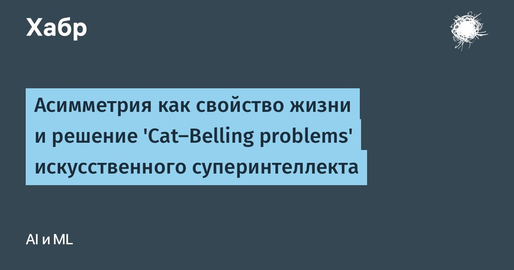

Асимметрия как свойство жизни и решение 'Cat-Belling problems' искусственного суперинтеллекта
Данный текст является конкретным техническим решением и ответом на вопросы, поставленные Элиэзером Юдковски в статье «Cat-Belling Problems», опубликованной 4 сентября по итогу его дебатов с Джеффри Ирвингом, прошедших 3-7 августа на международной конференции ILIAD-2026, посвященной теоретическим и математическим проблемам безопасности и контроля искусственного интеллекта.Чтобы лучше было понятно, о каких проблемах и вопросах идет речь, я опубликовал на Хабре свой перевод.
Читать далее